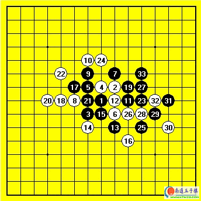
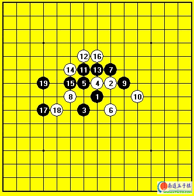

06年全国赛对呆呆[图]
#1 06年全国赛对呆呆[图] 作者：有志青年 发表时间：2007-3-18 13:59:31

黑：饶肇平
白：吴镝
黑胜
这是06年天津全国赛第八轮的对局。这次全国赛是我打所有比赛以来历史成绩最差的一次。最后带着5胜4败的成绩仅名列21离开了天津。还被大会颁发了个精神文明奖~郁闷啊。这盘对局的对手是我最好的朋友之一。我们一起下了四年棋。可以说我对他的计算风格棋谱都非常了解。事实上在这次全国赛之前呆呆已经三年没参加过任何比赛。这次比赛完全是陪我参加的意思。而在他参加的有限几次比赛之中我从没和他碰到过，这也是我们第一次在真正的比赛中想遇。呆呆这名棋手最大的特点就是他的进攻能力。用大海磅礴来形容再贴切不过了。在他拥有先手的棋局中很少有攻击不果的时候,曾被张进宇盛赞为中国的小ANDO。但他最大的破绽是对定式了解的非常少。他所知道的定式基本都是我告诉他的。在这方面我占据绝对优势。
比赛开始后我在思考开局。这时候呆呆小声和我聊天。如果这盘棋最后分不出胜负那么他将自动认负。我了解他的意思。他本就是来玩的。不想我最后因为和他和棋而名次跌的更厉害。不过他可能没想到这句话给我带来一个想法。不能走平稳趋向和棋的变化。每个棋手都是有尊严的。也许这样的让棋没什么，不过会让我很不舒服。反正这次比赛我已经失去了夺冠的可能，还不如放手来下出精彩的对局让自己满意。
实战开局选择斜月，呆呆看到开局就笑了，因为他知道我肯定是要走骗招了。白8骗招开始。这个变化黑想取胜需要连续妙手做棋，而在我对呆呆的了解中他应该只是见过但从没亲自走过这个变化，我也从没给他摆过这个变化。这样在这个未知局面完全要靠他自己来应对了，虽然他的攻击能力很强大，不过我的防守也不弱，尤其跟他下了这么多年了，他最近已经很难攻死我了。果然实战呆呆长考后没走出正确的必胜（参考图一），黑9跳三后白10是唯一防，11开始全盘控制，12无奈的打断黑棋左右联系的打算。13.14依然是黑想联系白打断的情况。白棋非常无奈的死贴防守。15后黑终于有限度的取得了左右的联系。16彻底让黑放弃从下方出棋的可能。局面看着还不错。可是黑17很生猛的一手，把局面从僵持迅速带到了激烈，这里我长考了很久也很无奈。18唯一防。其他防点黑都可以迅速取胜，不过虽然是唯一防，可局面也变成了黑一但杀不死就崩溃的境地，现在的局面是绝对不可能出现和棋的了。19绝妙好棋，当时看到这手粗算了下没发现好的防点，忽然看到了20的反击下法，又仔细算了下黑右边的形状似乎没有直接取胜的手段，我心中还暗自窃喜，感觉白胜利在望了。这里体现出了差距，也让我明白了19是何其绝妙的一手，当我走出20后呆呆迅速做出了应对，23.24必然25！绝妙，看到这个25我的脑子就一晕，形状上给我的第一感就是没防了。不过还好这个时候我在时间上优势巨大，而呆呆计算前面消耗掉了110分钟左右，他还只有10分钟的时间了。虽然局面上黑优势很大但未必不会出错误。可惜我的26没能给他带来什么时间上的压迫感。27.29.31下的非常自信，到此白彻底崩溃，32勉强了一下，33后黑数套VCF取胜。这盘输掉后我彻底失去了进入前5的可能，间接造成了我最后一轮厌赛的情绪。结果最后一轮斜月一打必胜又没走出来。让我第一次品尝到一次比赛四败的苦果。
参考图一:

黑必胜正确走法
#2 Re:06年全国赛对呆呆[图] 作者：gigiqi 发表时间：2008-7-6 6:35:22
图片现在看不见了#3 Re:06年全国赛对呆呆[图] 作者：百医天使 发表时间：2008-7-6 9:26:41
=======上图对应的爱五子棋谱代码如下，以便你拆解：========
h8i9g7h9g9i7i10f8g10g11j8i8i6g6h7j5f9e8j9d8g8e10k8h11k6j7k9k7m8l8l7m6k10
======================================================
=======上图对应的爱五子棋谱代码如下，以便你拆解：========
h8i9g7h9g9i7i10f8j9
======================================================
#4 Re:06年全国赛对呆呆[图] 作者：百医天使 发表时间：2008-7-6 10:20:07
好像这次全国团体比赛中也有人开了这个骗，不知道我为什么找不到了，郁闷。#5 Re:06年全国赛对呆呆[图] 作者：五子冰 发表时间：2008-7-7 22:40:23
高人啊.
初学菜鸟来拜.